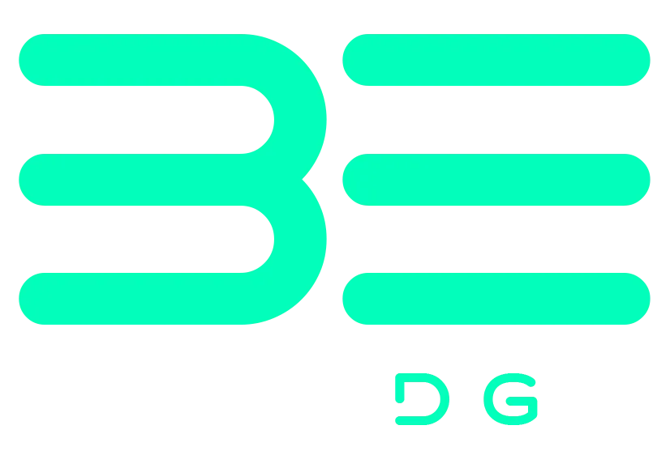

Work
Case Studies
Let's Talk ↗
Boxedge Solutions · Bengaluru
We make brands impossible to scroll past.
Films, AI, design & campaigns. Made for brands with something to say.
See the work ↓
Start on WhatsApp ↗
Case Studies
Real brands. Real numbers
.
View all case studies ↗
Selected Work
.
Load more
Have a project in mind
?
Chat on WhatsApp ↗
Case Studies ↗
×
▶
Discuss a similar project on WhatsApp ↗
×